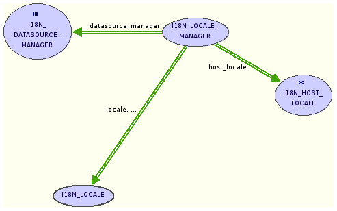
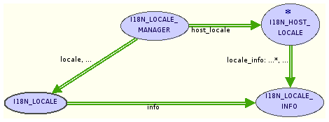
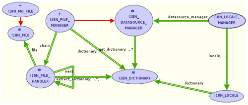

Eiffel internationalization library - Developer guide
General architecture of the i18n library
Where does the information come from?
The i18n library must obviously knows how to format things and finds
translations for many different locales. Translations are
application-dependant and thus we only have to deal with them on an
infrastructural basis - the actual information is supplied by the user.
However formatting information is not. Instead, we can fetch this from
the operating system.
This leads us to divide the library into three main parts:
- A part which organises and provides translations from a user-supplied data source.
- A part which retrieves formatting information from the host operating system
- A part which provides an interface to the information

General structure of the i18n library
An overview of the structure is provided to the right: the two
central classes, LOCALE and LOCALE_MANAGER are the main interface
classes. The rightmost class, HOST_LOCALE, is responsible for fetching
the formatting information, and the leftmost class, DATASOURCE_MANAGER,
must deal with finding the translation of strings.
In addition there are several classes that are used to
encapsulate information, not shown on diagrams to avoid them resembling
a web drawn by an overcaffeinated spider.
Note: the 'I18N' prefix of class names is omitted in the text for clarity.
Interface
The main two classes of the interface are, as has been previously
stated, LOCALE and LOCALE_MANAGER.
LOCALE represents all operations associated with a given locale:
formatting and translation. This is the class that clients use to
actually localise things, but all it does is provide wrapper functions:
the translations are retrieved from a DICTIONARY (more on this later)
provided to it on creation, and the formatting is done by specialised
formatting classes (DATE_FORMATTER, VALUE_FORMATTER, STRING_FORMATTER
and CURRENCY_FORMATTER) which are also operated with information passed
in a LOCALE_INFO object to the LOCALE on creation.
Obviously it should not be the user's job to do all this
initialisation. This is why there must be a class that is in charge of
presenting the user with a choice of locales and giving the user a
correctly initialised LOCALE for the locale ultimately chosen.
This class is LOCALE_MANAGER. A LOCALE_MANAGER uses an implementation
of HOST_LOCALE and a DATASOURCE_MANAGER to find out for which locales
formatting information and/or translations are available and can
provide the client with a list of supported locales.
A locale is identified by a LOCALE_ID object; this is not only used
internally but also by the client when requesting a LOCALE object.
Formatting information

Section of the i18n library that retrieves locale information
Most major operating systems have an API that provides localisation
information. Often they also allow clients to format dates, times and
values directly. We decided that instead of directly using the
formatting functions of the operating system, we would write our own
formatters in Eiffel. Retrieving the required information, however,
still has to be done in C. Depending on the operating system, this is a
more-or-less simple process.
The formatting information for a given locale is stored in
objects of class LOCALE_INFO. Each LOCALE_INFO is initialized on
creation with (what we think are sensible) default values, as not all
platforms provide all the same information.
LOCALE_MANAGER is able to retrieve the LOCALE_ID of the default
locale, filled LOCALE_INFOS and a list of locales with formatting
information from a HOST_LOCALE_IMP.
The deferred class HOST_LOCALE* specifies the interface for
operating system-specific implementations, and the right effective
class, HOST_LOCALE_IMP, is included in the system through a conditional
statement in the .ecf platform. This class normally makes use of C
externals to actually access the formatting information, although the
.NET implementation is an exception. The main jobs that it has are:
assembling a list of supported locales, creating, filling and returning
a LOCALE_INFO for a given locale, and identifying the locale set as
default in the operating system preferences.
Currently there are HOST_LOCALE_IMP classes for .NET, Windows, and what
should be more or less POSIX - only, for now, tested under linux.
Translations

Section of the i18n library that retrieves translations
The part of the library that provides translated strings is
slightly more complicated. The strings come from a so-called data
source (or datasource, depending on preference). The uri given to a
LOCALE_MANAGER on creation is examined by a URI_PARSER, which decides
what sort of data source this uri represents. It then creates an
appropriate DATASOURCE_MANAGER* with this uri and returns it to the
LOCALE_MANAGER.
From this point onwards the DATASOURCE_MANAGER* is responsible
for the main operations involving translations: providing a list of
locales and languages for which a translation is present, and providing
the translation in form of a DICTIONARY* for a given locale.
A DICTIONARY* is nothing more then a collection of translated strings,
with functions to access them. There are several effective descendants,
as the best way to store the strings may depend on several factors
(singular/plural ration, data source itself, etc.). The LOCALE_MANAGER
gets the relevant DICTIONARY* from the DATASOURCE_MANAGER* and passes
it to the LOCALE on creation. The LOCALE can then retrieve
translations.
If there are translations for both a locale itself and it's
language, the DATASOURCE_MANAGER* will of course return a DICTIONARY*
containing the translations specifically for that locale. If there is
no translation for the locale but one exists for it's language, that
will be used.
File data source
The file datasource works in the following way:
The FILE_MANAGER, an effective DATASOURCE_MANAGER*, has a
chain-of-responsibility built from FILE_HANDLER*s.
There are two operations provided by this chain of responsibility:
determining the scope of a file (i.e which language or locale it
corresponds to) and providing a DICTIONARY* containing the strings from
this file. By using this chain and a list of files in the current
directory, the FILE_MANAGER can list available locales, list available
languages and provide DICTIONARY* objects. The precise type of
DICTIONARY* provided is dependant on the type of file.
Each FILE_HANDLER* works by using a FILE* object, which provides the actual parsing functionality for a given file type.
Currently the only supported file type is the .mo file format, so this is the only example I may provide.
Possible expansion points
We hope our library is reasonably extensible. In particular, we foresee the following areas of expansion:
New file formats
Currently we only support the .po/.mo file format. This is because
we have limited time and resources and we also feel that the .mo file
format is the best current choice, as it it provides plural form
handling.
However, there are other file formats. Trolltech has their own format,
there is a Solaris message catalog format, presumably some Windows
formats, and OS X also has a native format.
In order to add support for one of these formats - or your own!
- it's necessary to write both FILE* and FILE_HANDLER* implementations.
Then the new effective descendant of FILE_HANDLER* must be added to the
chain-of-responsibility (called chain) in the make feature of FILE_MANAGER.
Data sources
New data sources
Currently we only have one implementation of DATASOURCE_MANAGER*.
But maybe a file is not suited to everything.
A possible data source, however far-fetched, might be a database: all
strings could be fetched via queries.
Or maybe all strings could be fetched via SOAP or RPC from a remote
machine, to ensure up-to-date translations.
More realistically one could certainly imagine a data source that
checks the locally-stored translations and fetches the latest version
remotely if there has been changes.
The easiest way to do such things is of course to write a new effective
descendant of DATASTRUCTURE*.
This may or may not require a new implementation of DICTIONARY* - for a
system that fetches strings on.demand rather then loading them all at
initialisation, a new DICTIONARY* would certainly be advisable!
To make the library know about a new DATASOURCE_MANAGER*,
URI_PARSER must be told how to recognise an uri that requires it. It is
advisable to choose a nice prefix.
FILE_MANAGER
Currently FILE_MANAGER has the simplistic policy of only examining
files in the current directory and trusting their name. It is very well
possible that there is a project policy of placing each locale in it's
own directory (KDE does this) or of having a translation spanned over
multiple .mo files for one locale.
A good place to implement such a project-dependant policy is a descendant of FILE_MANAGER, or an entirely new data source.
New dictionaries
New dictionaries might be required by new data sources. Or maybe the
translations used by your project can be stored in a more efficient way
then the general case - one could imagine a dictionary that takes
advantage of singular/plural distribution, or that is keyed to the way
translations are stored in a particular file format.
To add a new dictionary, it's sufficient to write an implementation of
DICTIONARY* and to make sure it's used.